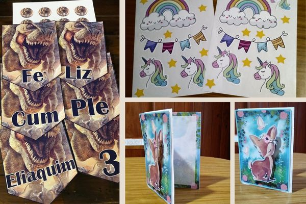
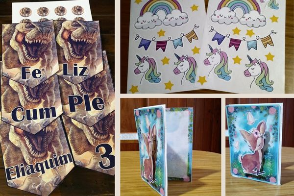

¡Bienvenidos a Kuma!
Somos Kuma Rosario
Kuma es el resultado de una iniciativa creada en 2017 por Ivana.
¡Nuestro compromiso es crear momentos felices y memorables para ustedes y sus seres queridos!
Si quéres que tus celebraciones, festividades, fechas especiales, o simplemente
un regalito sorpresa tenga un diseño completamente especial, ¡Kuma Rosario es el lugar para
vos!
Trabajamos con materiales de primera y ofrecemos productos y servicios personalizados de
alta calidad, atención inmediata y precios súper accesibles. Contáctanos para más detalles y
personalizaciones.
¡No te pierdas la oportunidad de tener eso que querés con un diseño único!
¿Qué hacemos?
Sublimaciones
Utilizamos poliéster color claro, friselina, polímero sublimable blanco, cerámica, papel y demás. Podés tener el diseño que quieras en remeras, tazas, sets de jardín, mochilas, llaveros, gorras y mucho más.
Impresiones
Trabajamos con una gran variedad de papeles de distintos gramajes, tamaños y colores. Hacemos impresiones en papel fotográfico, offset, Kraft, papel autoadhesivo brillante, cartulinas, opalinas y otros.
Estampados
Trabajamos con vinilos sublimables, Flock (gamuzado), termotrasferible, autoadhesivo y textil de primera calidad, la tinta no se cuartea, no pierde color, resiste al agua y no se despega.
¡Mirá nuestros trabajos!
 

¡Comunícate con nosotros!
¡Seguinos en nuestras redes y enterate de todas nuestras novedades y sorteos!
¡Agradecemos profundamente su apoyo y esperamos seguir formando parte de sus momentos especiales!